The base station split into what each mechanism does, not who drew it. Each picture shows one mechanism on its own at a moment of the mission where it works; "Watch it move on its own" opens the mission sim with only those parts shown. Counts include fasteners and bearings; a part can appear in two groups (the switches are also under Switches and sensors).
| Mechanism | Parts | Printed | Bought | Moving |
|---|---|---|---|---|
| Motor and torque limiter | 26 | 18 | 8 | 7 |
| Selector drum (the gear shifter) | 25 | 24 | 1 | 25 |
| Wrap cup | 9 | 8 | 1 | 9 |
| Capstan winch (tow and reel-in) | 20 | 19 | 1 | 20 |
| Spool, clutch and take-up | 22 | 17 | 5 | 22 |
| Launcher: rail, carriage and springs | 38 | 23 | 15 | 38 |
| Cock and release train | 8 | 7 | 1 | 8 |
| Aim: splitter, worm and crank-rocker | 20 | 16 | 4 | 14 |
| Tether path | 27 | 3 | 24 | 27 |
| Switches and sensors | 40 | 23 | 17 | 24 |
| Frame and electronics | 23 | 14 | 9 | 0 |
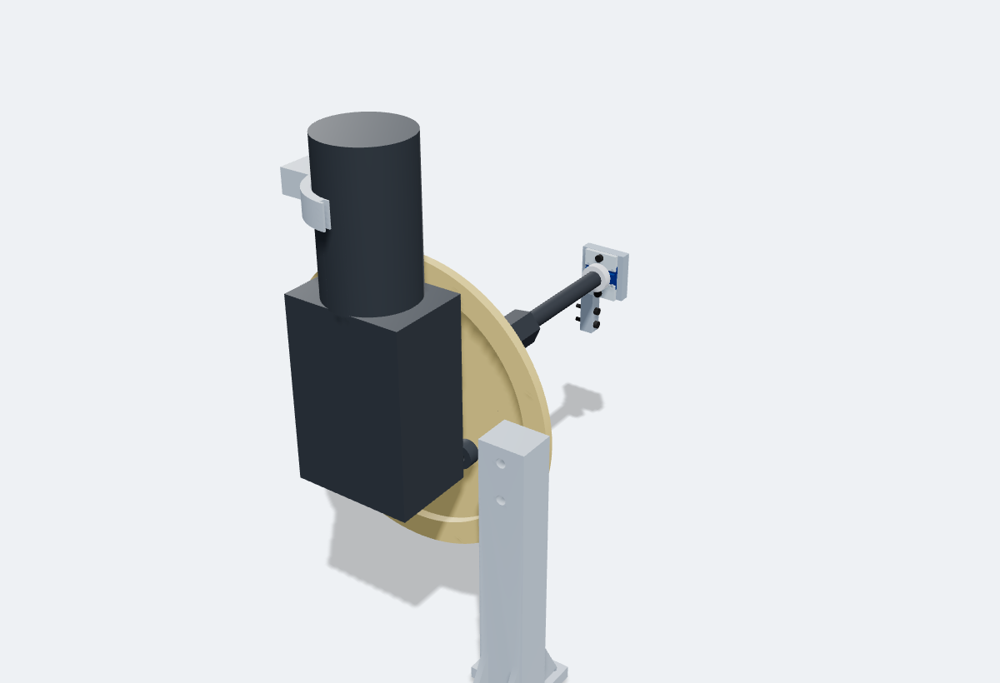
| Part | Material | What it is |
|---|---|---|
drum_coupler_hub | PPA-CF | Coupler hub on the wiper shaft (bore parametric: WIPER), M8 nut inside, shear pin hole |
drum_coupler | PPA-CF | Coupler: 5 N m shear pin limiter (D8), bus gear 50T m1.5 (D25), SW_INDEX cam, REEL journal, hex socket; prints hub end down, tree support under the bus gear ring |
drum_shear_pin | PLA | Torque limiter shear pin d4 (about 5 N m), prints lying; print 6, 5 are spares |
drum_shaft | PPA-CF | Main shaft: hex 22 AF, d12 spigot into the launch sleeve; prints on a hex flat (support under the spigot) |
drum_index_block | PLA | 2 x M3x10 SHCS |
drum_index_lever | PLA | SW_INDEX lever on the 6-bump coupler cam (D12 fallback encoder) |
drum_magnet_cap | PLA | AS5600 magnet cap on the spigot end (6 x 2.5 diametric or edge-on disc), M3 x 6 onto the flat |
frame_motor_leg | PLA | motor support leg (prints upright): 4 x M3 x 10 into the deck, 2 x M3 x 12 along y into the bridge behind the motor plate |
frame_wiper_motor | bought | 12 V car wiper motor (self-locking worm), 2-wire rebuild |
frame_motor_adapter | PPA-CF | puck adapter: slotted M6 holes (+-4 mm) for the motor bosses, rear lip with 8 M3 inserts for the rim screws, 2 inserts for cad-drum's SW_INDEX block; reprint when the motor is measured |
frame_can_stay | PLA | can stay: post on the motor plate (2 x M3 x 12 into plate inserts), cable tie or hose clamp round the can through the cradle slots; reprint with the adapter |
frame_wiper_shaft | bought | (part of the wiper motor) |
sensors_as5600 | bought | Adafruit AS5600 STEMMA QT PID 6357; STEMMA QT JST SH 4 pin cable |
sensors_as5600_carrier | PLA | 2 x M3x16 SHCS (into the housing spine) |
sensors_as5600_strip_top | PLA | M3x12 SHCS; M3 nut |
sensors_as5600_nut_top | bought | Clamp strip nut in the carrier back (counted on the strip) |
sensors_as5600_screw_top | bought | Clamp strip screw M3x12 (counted on the strip) |
sensors_as5600_strip_bot | PLA | M3x12 SHCS; M3 nut |
sensors_as5600_nut_bot | bought | Clamp strip nut in the carrier back (counted on the strip) |
sensors_as5600_screw_bot | bought | Clamp strip screw M3x12 (counted on the strip) |
sensors_as5600_col_screws | bought | 2 x M3x16 carrier to spine (counted on the carrier) |
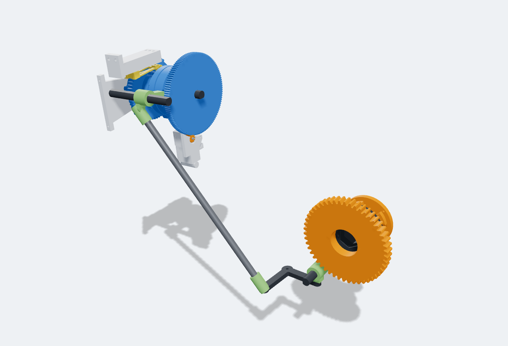
| Part | Material | What it is |
|---|---|---|
drum_reel_washer | PPA-CF | REEL gear retaining washer on the coupler journal end, 2 x M3 x 6 |
drum_gear_reel | PPA-CF | REEL output gear m2 50T face 12 (D20), free on its sleeve, dog face toward the collar; meshes C1 on the rail bridge (D49) |
drum_collar | PPA-CF | Dog collar: hex bore, 4 back-cut roofed dogs each face, fork groove (bridges over the lower dogs) |
drum_dogring_launch | PPA-CF | LAUNCH dog ring: 3 slots for the launch sleeve lugs, 3 x M3 from the sleeve side |
drum_drum_a | PLA | Drum A: N20 gear 120T m0.8, groove 1 barrel (follower), hex spigot |
drum_drum_b | PLA | Drum B: brake cam (spool clutch lever), Gray code bands A B C, wrap segment gear + locking arc |
drum_axle | PPA-CF | Fixed drum axle d10, pressed into the reel head front plate and bracket B |
drum_rod | PPA-CF | Follower guide rod d10, pressed into the reel head front plate and bracket B |
drum_follower | PLA | Follower slider: pin in groove 1, slides along the guide rod; the link takes its motion to the bridge |
drum_n20_pinion | PPA-CF | N20 pinion 10T m0.8, D bore pressed on the N20 shaft |
drum_n20 | bought | N20 right-angle self-locking worm gearmotor 12 V 27 rpm (have) |
drum_n20_cradle | PLA | N20 cradle on the reel head front plate: pivot + swing screw (hand fallback), SW_N20 contact |
drum_n20_strap | PLA | End plate closing the N20 cradle, 2 x M3 x 8 |
drum_bracket_b | PLA | 2 x M3x12 SHCS (through the spine) |
drum_switch_block | PLA | 2 x M3x12 SHCS (through the spine) |
drum_sw_lever_0 | PLA | Code switch lever A: flexure, round nub, M3 x 6 contact screw |
drum_sw_lever_1 | PLA | Code switch lever B: flexure, round nub, M3 x 6 contact screw |
drum_sw_lever_2 | PLA | Code switch lever C: flexure, round nub, M3 x 6 contact screw |
drum_link | steel | 8 mm steel rod, cut to the length on the print sheet |
drum_link_eye_1 | PLA | M3x16 SHCS + nyloc nut |
drum_link_eye_2 | PLA | M3x16 SHCS + nyloc nut |
drum_shift_rail | PPA-CF | Shift rail d10 on the rail bridge (pressed into the bridge plate boss) |
drum_fork | PLA | Compliant shift fork: thin yoke is the spring (about 1.5 N/mm), lug for the bell crank pin, contact tab |
drum_dog_post | PLA | Dog contact post on the shift rail: SW_DOG_R and SW_DOG_L screws (collar fully engaged) |
drum_crank | PPA-CF | M3x16 SHCS (pivot, tapped into the shelf) |
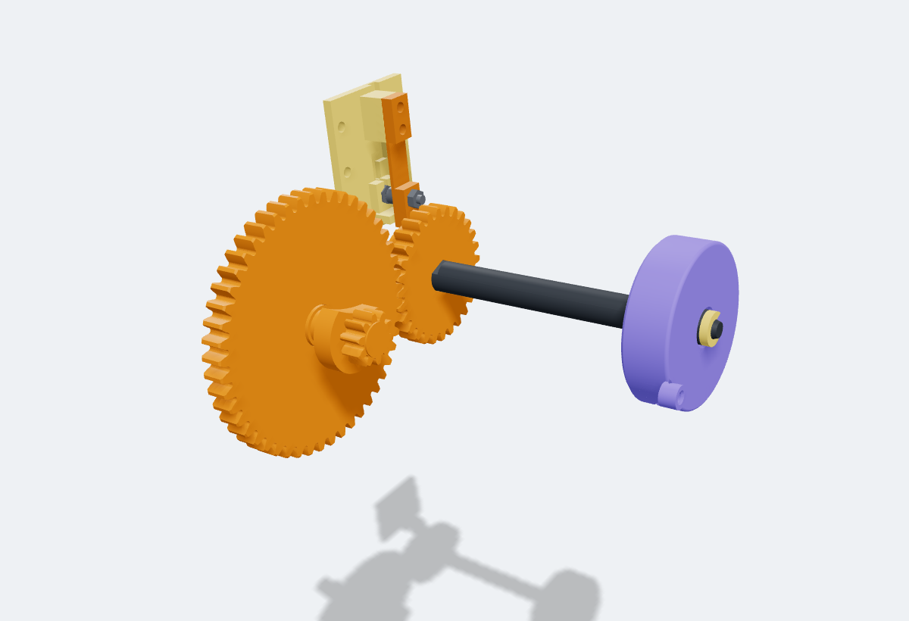
| Part | Material | What it is |
|---|---|---|
drum_idler_gear | PPA-CF | Wrap idler output gear 49T m1.5 (D bore) to the cad-reel cup gear 28T: 7 cup turns |
drum_idler | PPA-CF | Wrap idler shaft: pinion 10T m1.25 (locked at home by the drum lock arc), lock cam, journals in bracket B and P2 |
reel_k | PPA-CF | Cup shaft K (PPA-CF d10): runs inside the tube, cup in front, G_k behind P1b, journal in P2. Print standing on its rear end |
reel_cup | PLA | Wrap cup (Harry v7, D49 axial eyelet at r 26): the line runs straight through the eyelet. Print open end down |
reel_cup_clip | PLA | Harry's v7 C-clip on the cup shaft neck in front of the cup |
reel_gk | PPA-CF | Cup gear G_k m1.5 28T: driven by the drum's wrap idler 49T (7 cup turns per wrap); the raised track on its rear face holds SW_ARM closed, the notch at home lets it open. Print track face down |
reel_sw_base | PLA | 4 x M3x10 SHCS (base to P2) |
reel_sw_lever | PLA | 2 x M3x10 self tap (lever clamp) |
reel_sw_hw | bought | M3x10 SHCS + 2 M3 nuts |
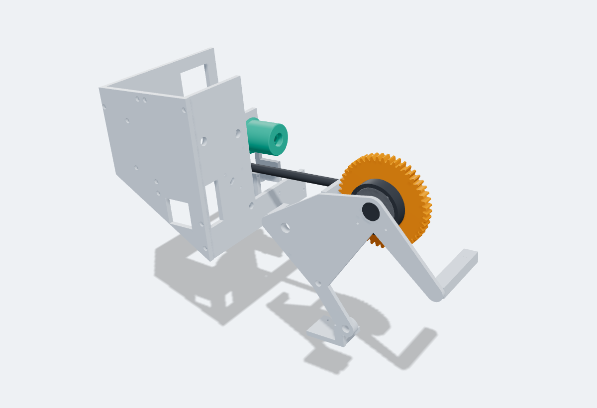
| Part | Material | What it is |
|---|---|---|
reel_head_front | PLA | 4 x M3x16 SHCS (into the rail flange inserts); 3 x M3x12 SHCS (spine) |
reel_head_spine | PLA | Head spine: inboard wall from the front plate to P2; the drum brackets and plates screw to it. Print flat |
reel_head_p1 | PLA | 2 x M3x12 SHCS (spine) |
reel_head_p1b | PLA | 2 x M3x12 SHCS (posts) |
reel_head_p2 | PLA | 2 x M3x12 SHCS (spine) |
reel_head_mid | PLA | 2 x M3x12 SHCS |
reel_c | PPA-CF | Capstan tube C (PPA-CF d20): key rib in the drum, G_c on its flat, journals in P1 and P1b. Print standing on its rear end |
reel_drum | PPA-CF | Capstan drum dia 40 x 40 (Harry v7), keyed on the tube. Print flange down |
reel_gc | PPA-CF | Capstan gear G_c m1.5 23T on the tube flat |
reel_ga | PPA-CF | G_a m1.5 26T on the rear end of u-shaft C |
reel_gb | PPA-CF | G_b m1.5 32T idler on its stub in P1 |
reel_gb_axle | steel | 8 mm steel rod, 26 mm long |
reel_uc | PPA-CF | u-shaft C (PPA-CF d10, 244 long): along the rail from the B1 bevel to G_a. Print standing (244 of the 260 mm height); an 8 mm steel rod with printed sleeves is the stiff fallback |
reel_bridge | PLA | 2 x M3x16 SHCS (arm to cheek A) |
reel_sprag_hub | PPA-CF | 4 x M3x16 SHCS |
reel_sprag | bought | CSK20PP one-way bearing 20x47x14 |
reel_cs_c | PPA-CF | Countershaft C (PPA-CF): sprag #2, C1 and the B1 bevel. Print standing |
reel_c1 | PPA-CF | C1 m2 49T: meshes the REEL output gear 50T across the pivot |
reel_b1g | PPA-CF | Bevel B1 gear m1.5 24T (2:1 up to u-shaft C) |
reel_b1p | PPA-CF | Bevel B1 pinion m1.5 12T on the front end of u-shaft C |
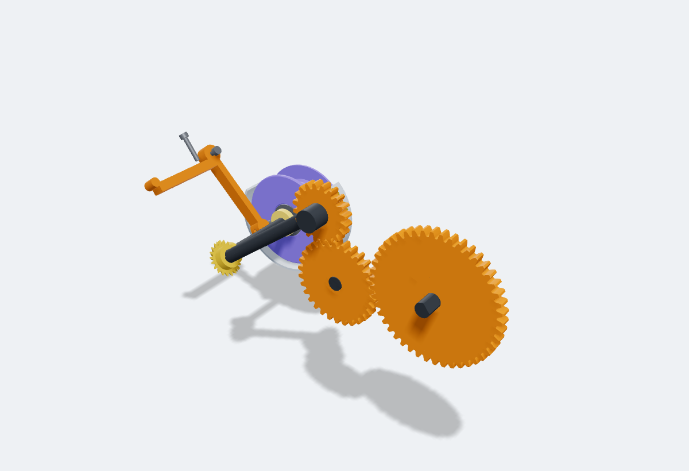
| Part | Material | What it is |
|---|---|---|
reel_ut | PPA-CF | u-shaft T (PPA-CF d8): along the rail from the B2 bevel to the B3 bevel. Print standing |
reel_spool | PLA | Spool d40 core, d62 flanges, 20 wide: 20 m of 1 mm Dyneema, turns free on two 608s. Print flange down |
reel_brg_1 | bought | 608ZZ 8x22x7 |
reel_brg_2 | bought | 608ZZ 8x22x7 |
reel_s | PPA-CF | Spool shaft S (PPA-CF d8): B3 bevel and the clutch disk on its flats, journals in the mid plate and the P1 leg. Print lying on its 1 mm flat |
reel_d | PPA-CF | Clutch disk D on the spool shaft flat: its friction ring presses the spool's outboard face. Print ring up |
reel_t | PPA-CF | Thrust ring: the lever's FIRM screw pushes it onto the inboard 608 inner race (clutch squeeze) |
reel_shroud | PLA | 1 x M3x8 SHCS (tab to the P1 leg) |
reel_lever | PPA-CF | Clutch lever (PPA-CF): the drum's brake cam presses its upper arm; the lower arm is the clutch spring leaf, its FIRM screw squeezes the spool. Print flat |
reel_lever_pin | bought | M3x16 SHCS + washer |
reel_firm_screw | bought | M3x10 SHCS + M3 nut |
reel_light_screw | bought | M3x16 SHCS + M3 nut |
reel_c1p | PPA-CF | c1' m1.5 46T, free on its stub: driven by the bus gear 50T, drives the swing idler |
reel_stub | PPA-CF | c1' stub axle (PPA-CF d8, pressed into the bridge) |
reel_swing_arm | PPA-CF | Swing arm on c1's hub: carries the idler into mesh with T1 on forward wiper turns |
reel_gi | PPA-CF | Swing idler m1.5 30T |
reel_cs_t | PPA-CF | Countershaft T (PPA-CF): T1 and the B2 bevel |
reel_t1 | PPA-CF | T1 m1.5 20T: take-up at 2.5 x wiper |
reel_b2g | PPA-CF | Bevel B2 m1 20T on countershaft T |
reel_b2p | PPA-CF | Bevel B2 m1 20T on the front end of u-shaft T |
reel_b3a | PPA-CF | Bevel B3 m1 20T on the rear end of u-shaft T |
reel_b3b | PPA-CF | Bevel B3 m1 20T on the spool shaft |
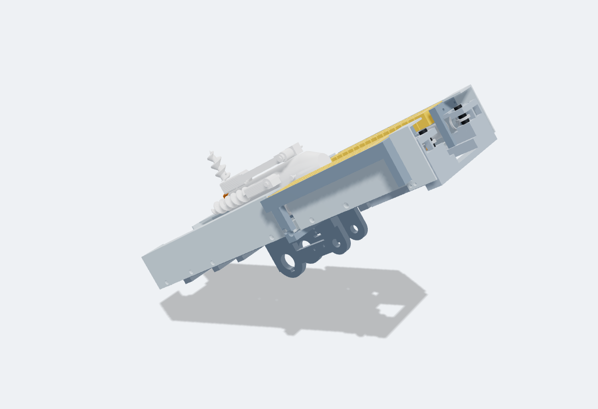
| Part | Material | What it is |
|---|---|---|
launch_rail_rear | PLA | Rail rear piece: shoe track, walls, flange at the rear end for the reel head (D49) |
launch_rail_mid | PLA | Rail mid piece: shoe track, cheeks on the sleeve, big gear pin bosses, lever seats, SW_GAP bracket pilots |
launch_rail_front | PLA | Rail front piece: shoe track end, spring anchor posts with straps, muzzle tie |
launch_carriage | PLA | Carriage: rack, shoes, dart cradle, pusher with tether hole, spring arms and pegs, SW feet |
launch_carriage_yoke | PLA | Bolted yoke: both spring arms (hit the stop, d8.1 holes for the 8 mm steel rod spring pegs, D5 holes at y +-56 empty), cross bar, keys, SW_SEATED block, rigid SW_HOME foot. Prints on the peg boss bottoms and key plates (w 62) |
launch_yoke_peg_l | PPA-CF | Spring peg on the yoke arm (printed PPA-CF lying down, or 8 mm steel rod 20 long): pressed into the blind d8.1 hole from below up to its end (a drop of CA if it is loose), the spring hook sits on the 6 mm below the boss (held at w 60 by the spring line); ends deburred |
launch_yoke_peg_r | PPA-CF | Spring peg on the yoke arm (printed PPA-CF lying down, or 8 mm steel rod 20 long): pressed into the blind d8.1 hole from below up to its end (a drop of CA if it is loose), the spring hook sits on the 6 mm below the boss (held at w 60 by the spring line); ends deburred |
launch_anchor_pin_l | steel | 8 mm steel rod, cut to length (see note), ends deburred |
launch_spring_l_hook_a | bought | Century C-243 (5/8 x 6-1/2 in x 0.054 in wire) extension spring |
launch_spring_l_hook_c | bought | Spring hook on the carriage peg |
launch_spring_l_0 | bought | Spring coils (shown in segments that spread when stretched) |
launch_spring_l_1 | bought | Spring coils (shown in segments that spread when stretched) |
launch_spring_l_2 | bought | Spring coils (shown in segments that spread when stretched) |
launch_spring_l_3 | bought | Spring coils (shown in segments that spread when stretched) |
launch_spring_l_4 | bought | Spring coils (shown in segments that spread when stretched) |
launch_anchor_pin_r | steel | 8 mm steel rod, cut to length (see note), ends deburred |
launch_spring_r_hook_a | bought | Century C-243 (5/8 x 6-1/2 in x 0.054 in wire) extension spring |
launch_spring_r_hook_c | bought | Spring hook on the carriage peg |
launch_spring_r_0 | bought | Spring coils (shown in segments that spread when stretched) |
launch_spring_r_1 | bought | Spring coils (shown in segments that spread when stretched) |
launch_spring_r_2 | bought | Spring coils (shown in segments that spread when stretched) |
launch_spring_r_3 | bought | Spring coils (shown in segments that spread when stretched) |
launch_spring_r_4 | bought | Spring coils (shown in segments that spread when stretched) |
launch_rail_splice_l | PLA | Top splice strap over the front rail joint (4 x M3 x 10 self tap) |
launch_rail_splice_r | PLA | Top splice strap over the front rail joint (4 x M3 x 10 self tap) |
launch_stop_spring_l | PLA | Carriage stop flexure: 16 loops (31 tapered leaves t 3.15/1.0 x 14), print upside down on the flat w 83.5 face, 100% infill / all perimeters; preload 6.6 mm by 2 x M3x20 draw screws through the frame front wall |
launch_stop_frame_l | PLA | Stop frame (print outboard face down): outboard preload ledge, anchor seat, rear foot (2 x M3x12 into the rail wall), front foot (2 x M3x16 into the rail front plate, hex key through the d6.5 holes in the front wall). Fit before the spring guards and the main springs |
launch_stop_spring_r | PLA | Carriage stop flexure: 16 loops (31 tapered leaves t 3.15/1.0 x 14), print upside down on the flat w 83.5 face, 100% infill / all perimeters; preload 6.6 mm by 2 x M3x20 draw screws through the frame front wall |
launch_stop_frame_r | PLA | Stop frame (print outboard face down): outboard preload ledge, anchor seat, rear foot (2 x M3x12 into the rail wall), front foot (2 x M3x16 into the rail front plate, hex key through the d6.5 holes in the front wall). Fit before the spring guards and the main springs |
launch_guard_l_a | PLA | 4 x M3x12 self tap |
launch_guard_l_b1 | PLA | 1 x M3x12 self tap |
launch_guard_l_b2 | PLA | 1 x M3x12 self tap; 1 x M3x10 self tap |
launch_guard_l_c | PLA | 2 x M3x12 self tap |
launch_guard_r_a | PLA | 4 x M3x12 self tap |
launch_guard_r_b1 | PLA | 1 x M3x12 self tap |
launch_guard_r_b2 | PLA | 2 x M3x12 self tap; 1 x M3x10 self tap |
launch_guard_r_c | PLA | 2 x M3x12 self tap |
launch_dart | bought | KEDGE v30 dart (reference, built separately) |
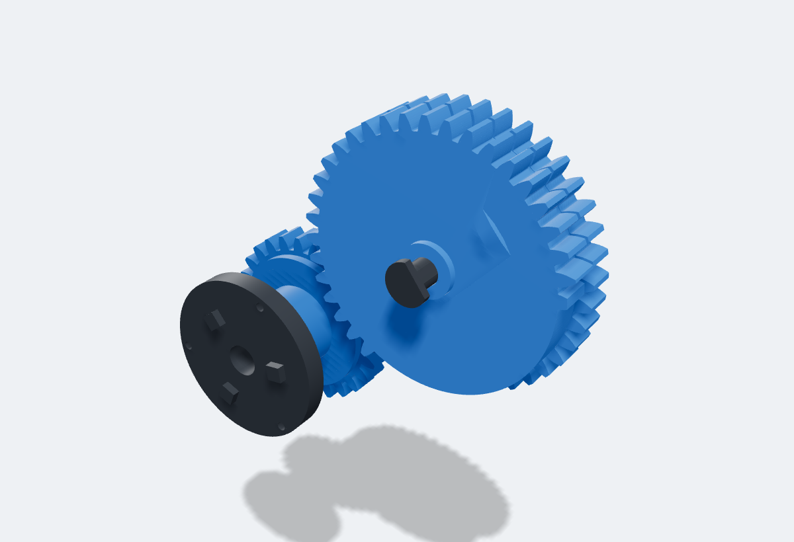
| Part | Material | What it is |
|---|---|---|
launch_big_gear | PPA-CF | Big gear m2.5: sector layer 27 of 40 teeth (rack, v10 release teeth) + full 40T layer (drive), SW_GAP cam bump, on the rail pin |
launch_gear_washer | PLA | Spacer washer: big gear hub to the left cheek |
launch_gear_pin | PPA-CF | Snap pin d10 for the big gear, C clip; prints lying on its flat |
launch_gear_clip | PLA | C clip on the big gear pin groove |
launch_drive_gear | PPA-CF | Drive gear m2.5 26T, sprag #1 inside on an integral key rib |
launch_drive_washer | PLA | Spacer washer: drive gear hub to the left cheek |
launch_sprag | bought | CSK20PP 20x47x14 sprag #1 |
launch_sleeve | PPA-CF | Launch sleeve d20: dog ring flange, integral key ribs (sprag #1, splitter sun), journals |
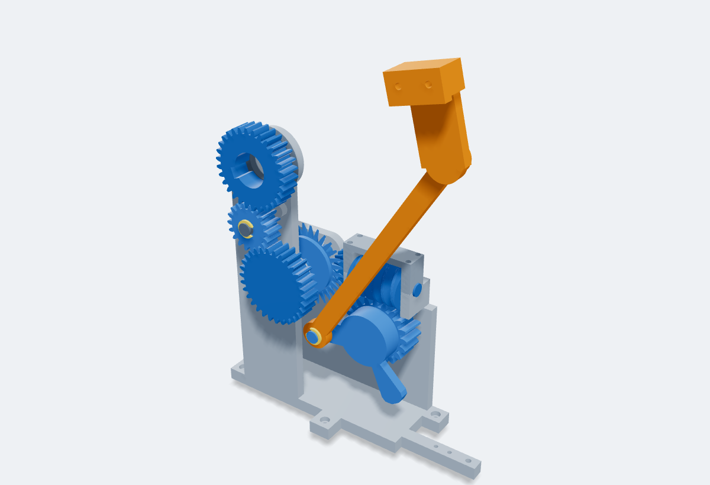
| Part | Material | What it is |
|---|---|---|
launch_aim_sun | PPA-CF | Splitter sun m1.5 z30 face 12, keyed on the launch sleeve |
launch_aim_arm | PPA-CF | Swing arm on the sleeve, dragged by the printed PLA flexure pad in its hub; printed idler pin with a printed C clip groove |
launch_aim_drag_pad | PLA | Flexure drag pad: cantilever finger t 2, tip bump 0.45 into the sleeve d20 (strain 0.43 %, about 2.3 N), root block pushed axially into the arm hub pocket |
launch_aim_drag_shim | PLA | Preload shim behind the drag pad root block (nominal; print up to 0.25 thicker for more drag, strain stays under 0.7 %) |
launch_aim_idler | PPA-CF | Splitter idler m1.5 z18 face 12 on the arm pin |
launch_aim_idler_clip | PLA | Printed C clip on the arm pin, holds the idler |
launch_aim_output | PPA-CF | Splitter output m1.5 z30 face 12 with its d8 countershaft (D flat) |
launch_aim_bevel30 | PPA-CF | Bevel m1.5 z30 on the countershaft D flat, drives the z15 2:1 |
launch_aim_worm | PPA-CF | Worm m2 pd24 single start (lead angle 4.8 deg, self-locking) + d8 shaft + bevel z15 |
launch_aim_crank | PPA-CF | Worm wheel m2 z20 face 16 = crank gear, crank arm r30 and d8 crank pin in one part, two 608 inside |
launch_aim_conrod | PPA-CF | Conrod 156 between pin centres (PPA-CF), printed C clips on both pins |
launch_aim_crankpin_clip | PLA | Printed C clip on the crank pin, inboard of the conrod |
launch_aim_lug | PPA-CF | Lug bracket (PPA-CF), 2 x M3 into the rail wall, d8 lug pin at (u 115.2, w 0) |
launch_aim_lugpin_clip | PLA | Printed C clip on the lug pin, outboard of the conrod |
launch_aim_housing | PLA | Aim housing on the deck (4 x M3 x 10 from the top through its counterbored foot flanges into the deck inserts): sleeve end bushing, countershaft bushings, worm saddles, M8 wheel bolt (head on the outer boss, nut in the inner face hex pocket), engaged and swung-out swing arm stop posts |
launch_aim_cap | PLA | Worm shaft saddle cap, 4 x M3x30 through the legs into 13 deep pilots in the saddles |
launch_aim_bolt | bought | M8x25 hex bolt ISO 4017 |
launch_aim_nut | bought | M8 hex nut ISO 4032 |
launch_aim_brg_1 | bought | 608ZZ 8x22x7 |
launch_aim_brg_2 | bought | 608ZZ 8x22x7 |
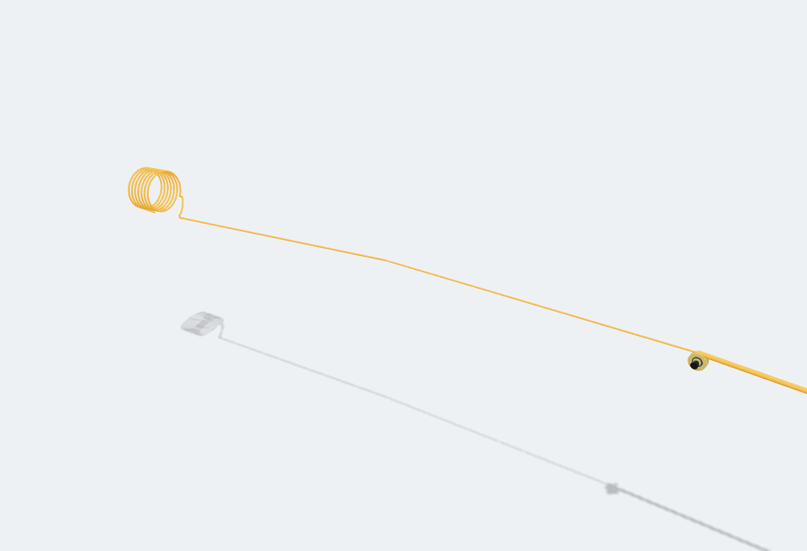
| Part | Material | What it is |
|---|---|---|
launch_muzzle_roller | PLA | Lip roller at the carriage front: the tether bends down over it in tow and retrieval (groove r 6 for the 1 mm line), 693ZZ inside |
launch_muzzle_roller_brg | bought | 693ZZ 3x8x4 |
launch_muzzle_roller_axle | bought | M3x16 SHCS; M3 nyloc nut |
launch_muzzle_washer_l | PLA | Lip roller thrust washer (0.9 thick, flange on the cheek side) between the bearing inner race and the cheek: put both in the roller bore, then drop roller and washers into the fork slot |
launch_muzzle_washer_r | PLA | Lip roller thrust washer (0.9 thick, flange on the cheek side) between the bearing inner race and the cheek: put both in the roller bore, then drop roller and washers into the fork slot |
launch_line_a0 | bought | Dyneema braid 1 mm (LINE) |
launch_line_a1 | bought | Dyneema braid 1 mm (LINE) |
launch_line_a2 | bought | Dyneema braid 1 mm (LINE) |
launch_line_a3 | bought | Dyneema braid 1 mm (LINE) |
launch_line_a4 | bought | Dyneema braid 1 mm (LINE) |
launch_line_a5 | bought | Dyneema braid 1 mm (LINE) |
launch_line_a6 | bought | Dyneema braid 1 mm (LINE) |
launch_line_a7 | bought | Dyneema braid 1 mm (LINE) |
launch_line_a8 | bought | Dyneema braid 1 mm (LINE) |
launch_line_a9 | bought | Dyneema braid 1 mm (LINE) |
launch_line_a10 | bought | Dyneema braid 1 mm (LINE) |
launch_line_a11 | bought | Dyneema braid 1 mm (LINE) |
launch_line_a12 | bought | Dyneema braid 1 mm (LINE) |
launch_line_a13 | bought | Dyneema braid 1 mm (LINE) |
launch_line_a14 | bought | Dyneema braid 1 mm (LINE) |
launch_line_a15 | bought | Dyneema braid 1 mm (LINE) |
launch_line_a16 | bought | Dyneema braid 1 mm (LINE) |
launch_line_a17 | bought | Dyneema braid 1 mm (LINE) |
launch_line_a18 | bought | Dyneema braid 1 mm (LINE) |
launch_line_a19 | bought | Dyneema braid 1 mm (LINE) |
launch_line_a20 | bought | Dyneema braid 1 mm (LINE) |
launch_line_p | bought | Tether through the pusher hole to the tail |
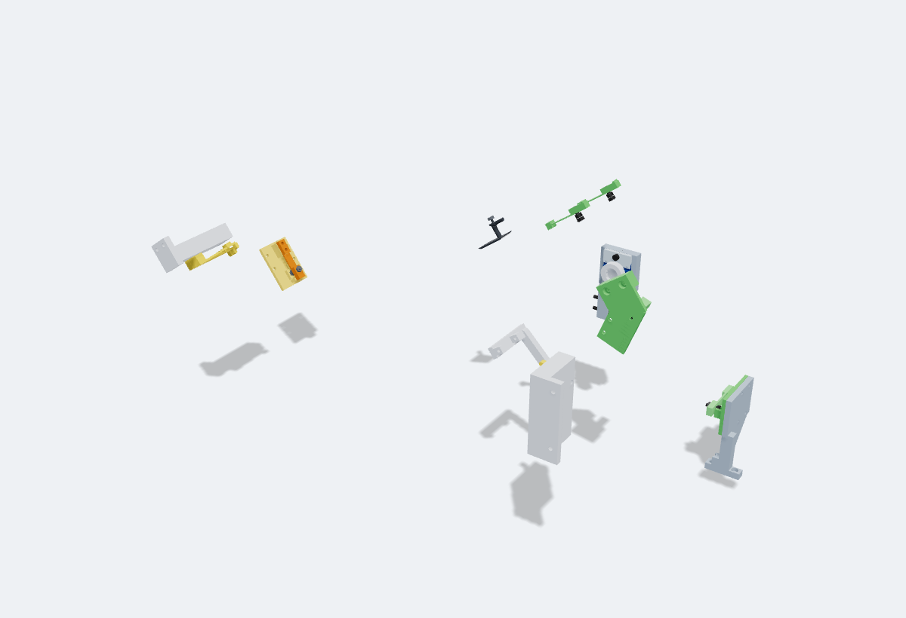
| Part | Material | What it is |
|---|---|---|
drum_index_block | PLA | 2 x M3x10 SHCS |
drum_index_lever | PLA | SW_INDEX lever on the 6-bump coupler cam (D12 fallback encoder) |
drum_magnet_cap | PLA | AS5600 magnet cap on the spigot end (6 x 2.5 diametric or edge-on disc), M3 x 6 onto the flat |
drum_switch_block | PLA | 2 x M3x12 SHCS (through the spine) |
drum_sw_lever_0 | PLA | Code switch lever A: flexure, round nub, M3 x 6 contact screw |
drum_sw_lever_1 | PLA | Code switch lever B: flexure, round nub, M3 x 6 contact screw |
drum_sw_lever_2 | PLA | Code switch lever C: flexure, round nub, M3 x 6 contact screw |
drum_dog_post | PLA | Dog contact post on the shift rail: SW_DOG_R and SW_DOG_L screws (collar fully engaged) |
launch_sw_seated | PLA | SW_SEATED printed flex lever on the left rail lip, at rest (prints on its side): beam 0.8 thick, contact gap 0.50 (one screw turn), pad pretravel 0.70 + overtravel 0.25, peak strain 0.10 % (limit 0.8 %) |
launch_sw_seated_screw | bought | M3x6 SHCS |
launch_sw_seated_nut | bought | M3 nut |
launch_sw_home | PLA | SW_HOME printed flex lever on the right rail lip, at rest (prints on its side): beam 0.8 thick, contact gap 0.50 (one screw turn), pad pretravel 0.70 + overtravel 0.25, peak strain 0.10 % (limit 0.8 %) |
launch_sw_home_screw | bought | M3x6 SHCS |
launch_sw_home_nut | bought | M3 nut |
launch_seat_plunger | PPA-CF | SW_SEATED plunger: foot pad + stem with a 45 deg chamfer, clip groove on top |
launch_seat_pushrod | PPA-CF | SW_SEATED pushrod d3.2 with the stem slot |
launch_seat_clip | PLA | Head cap on the plunger pin (rests on the yoke block) |
reel_sw_base | PLA | 4 x M3x10 SHCS (base to P2) |
reel_sw_lever | PLA | 2 x M3x10 self tap (lever clamp) |
reel_sw_hw | bought | M3x10 SHCS + 2 M3 nuts |
sensors_as5600 | bought | Adafruit AS5600 STEMMA QT PID 6357; STEMMA QT JST SH 4 pin cable |
sensors_as5600_carrier | PLA | 2 x M3x16 SHCS (into the housing spine) |
sensors_as5600_strip_top | PLA | M3x12 SHCS; M3 nut |
sensors_as5600_nut_top | bought | Clamp strip nut in the carrier back (counted on the strip) |
sensors_as5600_screw_top | bought | Clamp strip screw M3x12 (counted on the strip) |
sensors_as5600_strip_bot | PLA | M3x12 SHCS; M3 nut |
sensors_as5600_nut_bot | bought | Clamp strip nut in the carrier back (counted on the strip) |
sensors_as5600_screw_bot | bought | Clamp strip screw M3x12 (counted on the strip) |
sensors_as5600_col_screws | bought | 2 x M3x16 carrier to spine (counted on the carrier) |
sensors_sw_rail_low | PLA | 4 x M3x8 self tap (base to bracket) |
sensors_sw_rail_low_lever | PLA | 2 x M3x10 self tap (lever clamp) |
sensors_sw_rail_low_screw | bought | M3x10 SHCS; M3 nut (jam) |
sensors_sw_rail_low_jam | bought | SW_RAIL_LOW jam nut on the contact screw (wire ring lug under it) |
sensors_sw_rail_low_nut | bought | M3 nut |
sensors_sw_rail_low_bracket | PLA | M3x10 SHCS (foot into the housing); M3x16 SHCS (deck screw) |
sensors_sw_gap | PLA | 2 x M3x12 SHCS (arm into the right cheek) |
sensors_sw_gap_lever | PLA | 2 x M3x10 self tap (lever clamp) |
sensors_sw_gap_screw | bought | M3x10 SHCS; M3 nut (jam) |
sensors_sw_gap_jam | bought | SW_GAP jam nut on the contact screw (wire ring lug under it) |
sensors_sw_gap_nut | bought | M3 nut |
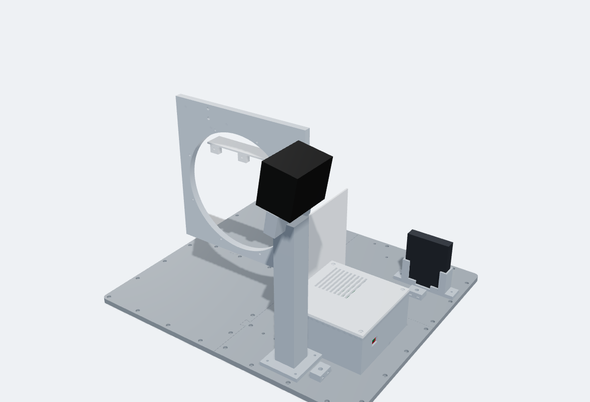
| Part | Material | What it is |
|---|---|---|
frame_cheek_r | PLA | motor plate (y -10..0, front face = the spec's y 0): window for the puck adapter, 8 rim holes (M3 x 12 from the front into the puck lip), bridge to the motor leg (2 x M3 x 12), can stay and hood inserts; carved round the other subsystems |
frame_ebay | PLA | electronics bay: ESP32-S3 cradle (USB slot), BTS7960 on standoffs with vents, DRV8833, MP1584, HX711 pockets, fuse cradle, wire exits with tie anchors |
frame_ebay_lid | PLA | bay lid: grille over the BTS7960, 4 x M3 into the corner bosses |
frame_ebay_esp_clamp | PLA | ESP32 hold-down over the module end, 2 x M3 x 8 into the cradle posts |
frame_pcb_esp32 | bought | Espressif ESP32-S3-DevKitC-1-N8 |
frame_pcb_bts7960 | bought | BTS7960 43 A module (IBT-2) |
frame_pcb_mp1584 | bought | MP1584EN buck module, set to 9.0 V |
frame_pcb_drv8833 | bought | Pololu DRV8833 2130 (headers off) |
frame_pcb_hx711 | bought | HX711 load cell amplifier (optional) |
frame_perfboard | bought | perfboard 55 x 31 (dividers, pull-downs, 3V3 and GND buses), 2 x M3 x 10 on wall bosses |
frame_fuse_20a | bought | inline ATO fuse holder + 20 A fuse |
frame_guard_hood | PLA | gear hood over the reel and bus gears, M3 x 10 through its lugs into the motor plate |
frame_guard_front | PLA | front gear guard between the drum gears and the bay, M3 x 10 into the deck |
frame_camera_mount | PLA | Kiyo X mount: its own clip grips the 16 mm edge plate (or a 1/4-20 screw), 4 x M3 x 10 into the deck |
frame_rc832_holder | PLA | RC832 holder: receiver stands antenna-end up in the slot, leads out low, 2 x M3 x 10 |
frame_rc832 | bought | RC832 5.8 GHz receiver (80 x 65 x 15) |
frame_kiyo_x | bought | Razer Kiyo X webcam |
frame_cable_anchor_1 | PLA | cable-tie anchor (strain relief), 1 x M3 x 12 into the deck |
frame_cable_anchor_2 | PLA | cable-tie anchor (strain relief), 1 x M3 x 12 into the deck |
frame_deck_1 | PLA | deck: M3 inserts for every frame foot; 10 x M3 rover holes (it is its own drill template) |
frame_deck_2 | PLA | deck: M3 inserts for every frame foot; 12 x M3 rover holes (it is its own drill template) |
frame_deck_3 | PLA | deck: M3 inserts for every frame foot; 9 x M3 rover holes (it is its own drill template) |
frame_deck_4 | PLA | deck: M3 inserts for every frame foot; 14 x M3 rover holes (it is its own drill template) |